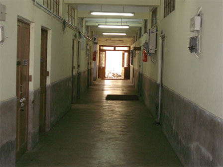
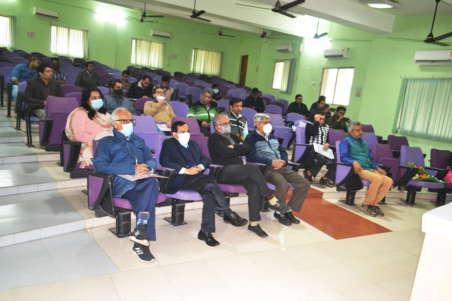
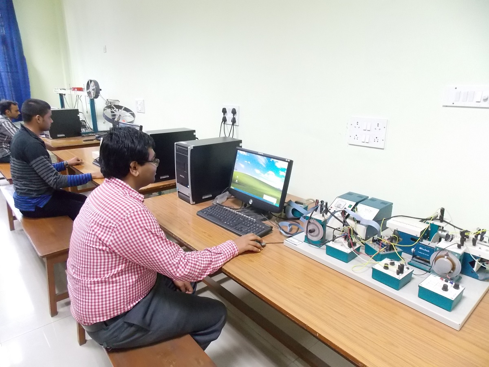
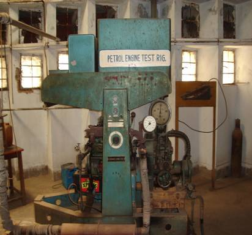
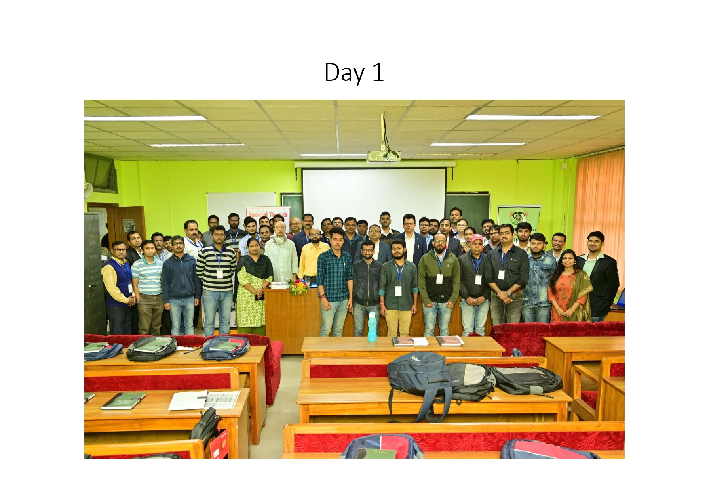
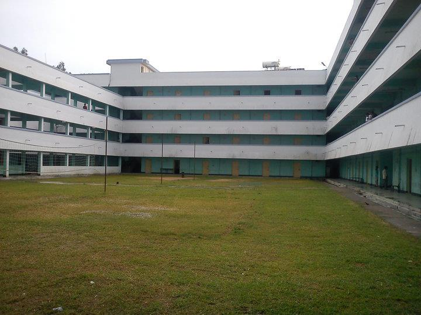

The Department started imparting instructions with the most modern curricula and syllabus to the students ofr undergraduate course since 1991 and post graduate course since July, 2004. The Department maintains an excellent teaching/learning and research environment with dedicated, qualified and dynamic faculties and well equiped laboratories. The Department of Computer Science and Engineering (CSE) embodies the university's tradition of excellence in engineering education. CSE is in a period of exciting growth and opportunity. CSE Graduates capture leading academic appointments as well as opportunities in renowned computer industries. The newly build second floor of the department includes highly sophisticated VLSI laboratory,Embedded Systems laboratory, Soft computing and Networking laboratories. Robotics, mobile communication, natural language processing are the broad areas into which the researchers have made a foray.

The embryonic formation of the Department of Electronics and Communication Engineering was in the year 1983 with the introduction of an undergraduate course. Situated amidst lush green campus with teak plantations, the Department, over the time, has grown in several dimensions and provides a magnetic ambience in teaching and learning. Apart from the four years B. Tech course the Department also offers two full time M.Tech courses, one in Telecommunication Engineering and another in Microelectronics and VLSI. The Department also offers PhD in several areas. The faculties are engaged in research in diverse topics focussing in Telecommunication, Antenna and Microwave, Microelectronics and VLSI, Signal and Image processing and Computational Systems Biology. It is well equipped with sophisticated laboratories in the areas of VLSI, Signal Processing, Microwave, Antenna and Wireless Communication. The Department has been supported by, SMDP for VLSI, DST-FIST for Wireless Communications and NPMASS for MEMS Research. Sponsored research from research initiation grant as well as DST and SERB have been initiated over the years. The Department has also received fund from TEQIP for its development. There are a significant number of institute research scholars presently carrying out PhD under the supervision of faculties while several part time research scholars are also registered for the PhD program. A large number of PhD has already been produced by the Department. The research strength has been reflected by quality publications of the Department.

The Electrical Engineering department was established in the year of 1960. Presently the department offer B. Tech in Electrical Engineering, with intake capacity of 100 students, M. Tech in Power Systems and Power Electronics & Machine Drives, each have intake 20 students, and PhD program. The students from different states of India and also from different countries are presently studying in the department. The department has 17nos. qualified and highly motivated faculty members with various specializations, is equipped with around 15 different laboratories, and among these 8 laboratories has modern state of the art facilities for research and consultancy work. The department also has strong regional and foreign collaboration.

Department of Mechanical Engineering is the largest and one of the oldest departments of the Institute started in the year 1960. It offers both undergraduate (B.Tech.) and postgraduate (M.Tech.) degree course apart from doctoral programme. Department of Mechanical Engineering offers three PG course with specialization: Machine Design, Thermal Engineering, Fluid Mechanics & Heat transfer. For the benefit of the students who are at the Industry or in other Institute nearby, the department runs a parallel module of part time course. This overview contains the curriculum of the UG and PG courses, profile of the faculty, a list of the laboratories and the publications for the last two years by the faculty.

The Department, which started its journey in the year 1960, presently offers B.Tech. (Metallurgical and Material Engineering), M.Tech. (Metallurgy and Materials Technology) and Ph.D Programme. The Department maintains high level of interactions with other academic institutes (IIT Kharagpur, Jadavpur University, IIEST (Shibpur) and NIFFT (Ranchi)), CSIR Laboratories, SAIL and other steel plants in India. At present, fifteen highly qualified and dedicated faculty members are serving this Department.

Unique aspect of learning experience at "Department of Management Studies" of National Institute of Technology, Durgapur :- Department of Management Studies within NIT umbrella having rich history of imparting technical education for last four decades. Faculty resources from diverse background. As well as cross functional integration from various faculties of other discipline such as humanities / Social Science / Computer Applications. Curriculum is designed with inputs from industry experts, faculty from IIM's and other reputed B-Schools. Special courses are offered to regular students in collaboration with various leading institutes of that field. Personalities from different walks of life share their rich experience regularly.

The Department of Chemical Engineering of National Institute of Technology, Durgapur, was established with active support of UNESCO. The department was built up by a team of dedicated faculty members with the help of a host of visiting professors deputed by UNESCO to NIT Durgapur. Some of the faculty members were trained abroad under UNESCO programme, and a number of equipment and instruments were donated by UNESCO to thedepartment. The B.E. course in Chemical Engineering was started in 1964, and the first batch of students were awarded the degree in 1969. The Post-graduate programme with the specialisation 'Production Fertilisers' was introduced in 1968, along with the doctoral programme in Chemical Engineering. The department has a sanctioned intake of 60 students for the B.Tech programme and 05 students for 5 years dual degree B. Tech Programme per year.